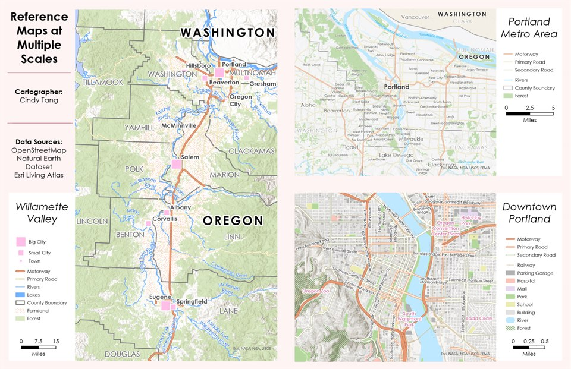
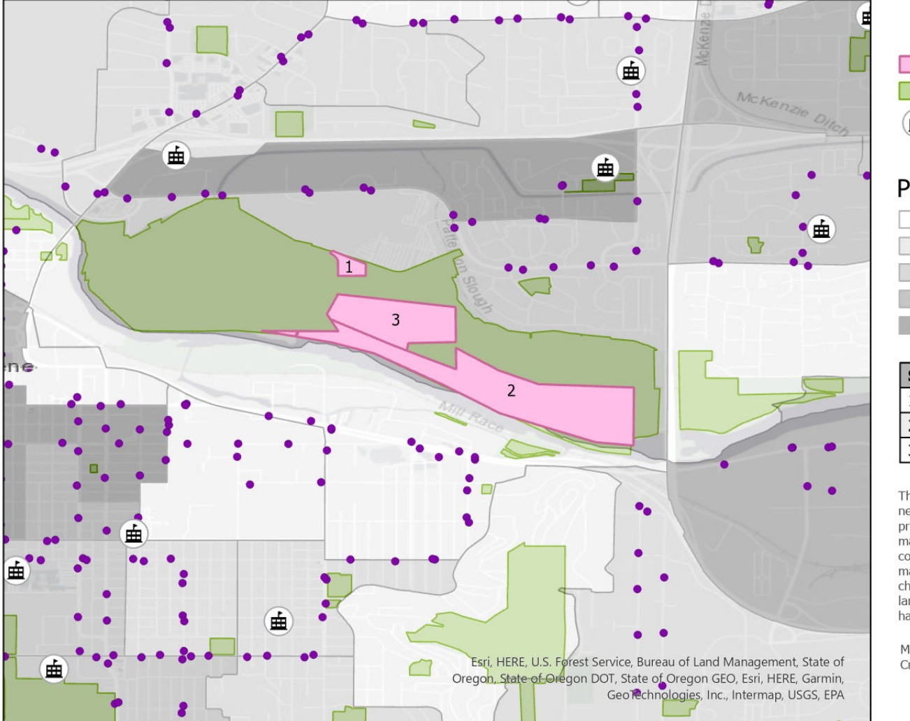
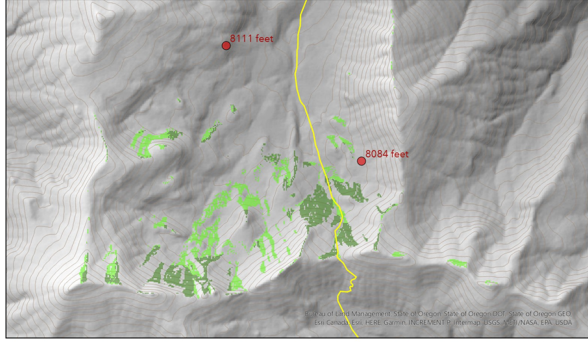
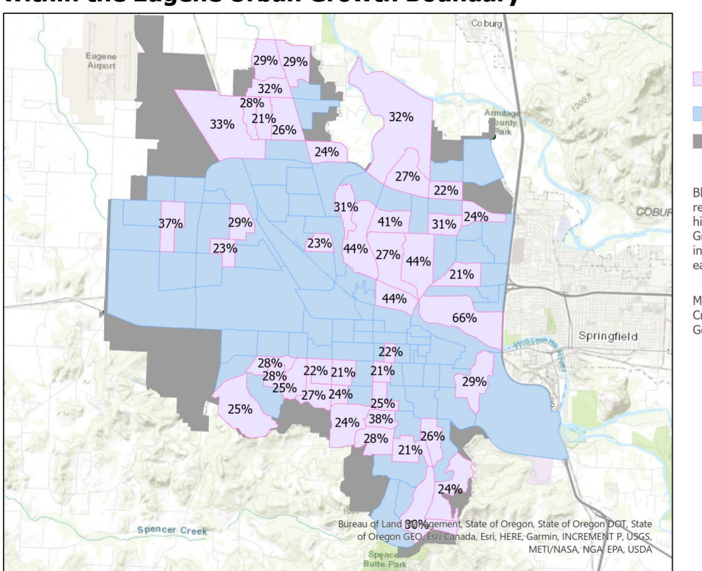

PROJECTS
all my projects.
A growing collection of GIS, mapping, and spatial analysis work.
2020 Census Map
This map uses 2020 Census data, with color and labels that make population patterns easier to compare.

Custom Reference Maps
Three basemap-free reference maps for the Willamette Valley, Portland metro area, and downtown Portland, designed for clear reading at each scale.

Philomath Streets and Site Visit Locations
For my Urban Transportation class, I mapped site visits from the Sustainable City Year Program in Philomath, highlighting underdeveloped streets and potential improvements.

Navigation Center Site Selection
Assessed public parcels in Eugene-Springfield for a potential navigation center, considering size, land status, access, services, and community context.

Wolverine Habitat Suitability
Combined raster suitability criteria with terrain and visibility analysis to identify potential wolverine denning habitat.

Elderly Population & Community Access
Mapped older adult population by block group and compared higher-concentration areas with nearby community resources.
Butters' Guide to Eugene
A local guide to Eugene highlighting places and discoveries through the perspective of Butters.